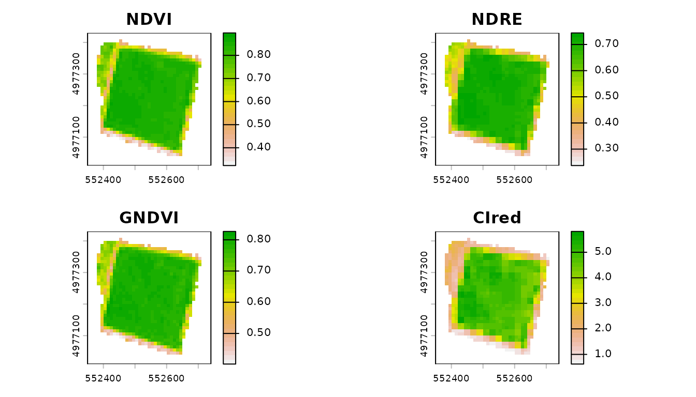
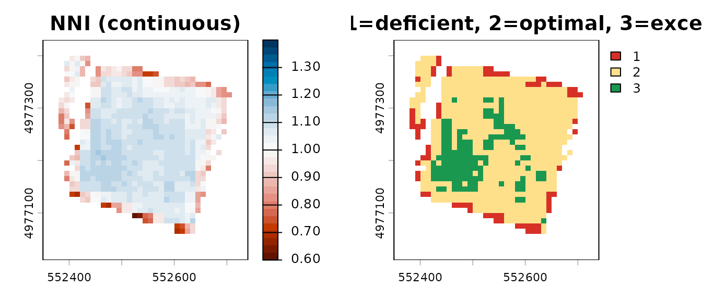
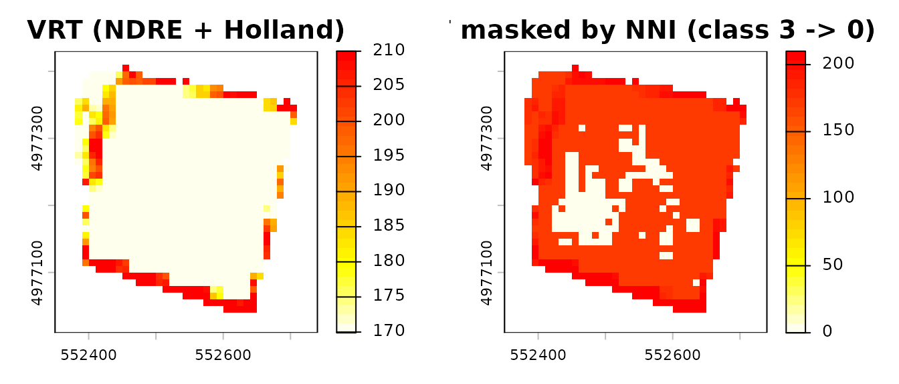

Remote Sensing Diagnosis: multi-index VIs and Nitrogen Nutrition Index
Source:vignettes/remote-sensing-diagnosis.Rmd
remote-sensing-diagnosis.RmdOverview
This vignette demonstrates the remote-sensing diagnosis pipeline added in agrinutri 0.7.0:
- Compute multiple vegetation indices (VIs) from a multi-band raster
with
compute_vi(). - Diagnose crop nitrogen status pixel-by-pixel with
compute_NNI()/diagnose_N_status(), using the species-specific critical nitrogen dilution curve of Lemaire & Gastal (1997). - Feed the diagnosis into the variable-rate prescription pipeline
(
variable_rate_N()) so that the applied dose responds to the NNI diagnosis rather than to a raw vegetation index alone.
Why this matters: NDVI saturates at LAI > 3–4. In mid- to late-vegetative stages (GS30+ for winter wheat; V8+ for maize) red-edge indices (NDRE, CIred-edge) are far more sensitive to canopy N status. And all of those indices are still just proxies: the scientifically correct diagnostic variable is the NNI, which uses the dilution curve to convert biomass + N% into a dimensionless deficiency / sufficiency index.
1. A Sentinel-2 scene
The package ships the Sentinel-2 Level-2A scene of 13 August 2024
over plot P01 of the Piacenza example farm (grain maize, 10 bands,
reflectance scaled by 10000; see ?piacenza):
library(agrinutri)
library(terra)
#> terra 1.9.50
s2f <- system.file("extdata/sentinel-2/S2_piacenza_P01_20240813.tif", package = "agrinutri")
field <- terra::vect(system.file("extdata/piacenza_farm.geojson", package = "agrinutri"))
field <- terra::project(field[field$plot == "P01"], terra::crs(terra::rast(s2f)))
s2 <- terra::mask(terra::rast(s2f), field) # keep the field only
s2f <- tempfile(fileext = ".tif") # estimate_biophysical() reads a file
terra::writeRaster(s2, s2f, NAflag = 0, datatype = "INT2U")
names(s2)
#> [1] "B02" "B03" "B04" "B05" "B06" "B07" "B08" "B8A" "B11" "B12"2. Multi-index VI engine
compute_vi() computes any of NDVI, NDRE, GNDVI,
CIred-edge, MCARI, MSAVI2 from the stack, with configurable band
mapping. Default mapping follows Sentinel-2 L2A naming;
scale_factor = 10000 converts the stored integers to
reflectance.
ndvi <- compute_vi(s2, "NDVI", scale_factor = 10000)
ndre <- compute_vi(s2, "NDRE", scale_factor = 10000)
gndvi <- compute_vi(s2, "GNDVI", scale_factor = 10000)
cire <- compute_vi(s2, "CIred", scale_factor = 10000)
summary(terra::values(ndvi, mat = FALSE))
#> Min. 1st Qu. Median Mean 3rd Qu. Max. NAs
#> 0.3231 0.7523 0.8415 0.7812 0.8540 0.8971 712
summary(terra::values(ndre, mat = FALSE))
#> Min. 1st Qu. Median Mean 3rd Qu. Max. NAs
#> 0.2372 0.5660 0.6959 0.6340 0.7130 0.7441 712
par(mfrow = c(2, 2), mar = c(2, 2, 2, 3))
terra::plot(ndvi, main = "NDVI", col = rev(terrain.colors(30)))
terra::plot(ndre, main = "NDRE", col = rev(terrain.colors(30)))
terra::plot(gndvi, main = "GNDVI", col = rev(terrain.colors(30)))
terra::plot(cire, main = "CIred", col = rev(terrain.colors(30)))
NDVI and GNDVI typically cluster in a narrow range for closed canopies (saturation); NDRE and CIred-edge preserve variability at high biomass. That is why the red-edge indices are the reference for N diagnosis in GS30+ / V8+.
3. Critical-N curve
critical_N_curve() returns the (a, b, W_min)
coefficients of the species-specific critical nitrogen dilution curve.
Italian synonyms are accepted.
critical_N_curve("wheat")
#> $a
#> [1] 5.35
#>
#> $b
#> [1] 0.44
#>
#> $W_min
#> [1] 1.55
#>
#> $reference
#> [1] "Justes et al. 1994"
critical_N_curve("mais") # italian
#> $a
#> [1] 3.4
#>
#> $b
#> [1] 0.37
#>
#> $W_min
#> [1] 1
#>
#> $reference
#> [1] "Plenet & Lemaire 1999"The curve is Nc = a * W^(-b), where Nc is the critical N concentration (% DM) and W the aboveground dry biomass (t DM / ha). Defaults come from Justes 1994 (wheat), Plenet & Lemaire 1999 (maize), Sheehy 1998 (rice), Colnenne 1998 (rapeseed), Duru 1997 (grass), van Oosterom 2010 (sorghum), Debaeke 2012 (sunflower).
4. Scalar NNI diagnosis
# Winter wheat at GS30: N% = 3.2, biomass = 2.5 t DM / ha
compute_NNI(N_content = 3.2, biomass = 2.5,
crop = "wheat", is_percent = TRUE)
#> [1] 0.8951376
# -> ~0.94 : slightly deficient
# Maize at V8: N% = 2.8, biomass = 4 t DM / ha
compute_NNI(2.8, 4, crop = "maize", is_percent = TRUE)
#> [1] 1.375439
# -> ~1.5 : luxury consumption5. Raster-wise NNI diagnosis
Biomass (W) and plant N concentration (N%) come from the Sentinel-2
scene: estimate_biophysical() retrieves leaf area index,
leaf dry matter and canopy N content with Gaussian-process regression,
and compute_NNI_from_S2() converts them into W, N% and the
NNI along the maize dilution curve. diagnose_N_status()
gives the same diagnosis from any pair of W and N% layers.
bio <- estimate_biophysical(s2f, output_dir = tempdir(),
variables = c("LAI", "Cm", "CNC_Cprot", "FVC"))
nni <- compute_NNI_from_S2(bio$LAI, bio$Cm, bio$CNC_Cprot, cnc_layer = "CNC_Cprot",
crop = "maize", fvc = bio$FVC)
d <- diagnose_N_status(N_content = nni$N_actual, biomass = nni$W,
crop = "maize", is_percent = TRUE)
par(mfrow = c(1, 2), mar = c(3, 3, 2, 4))
terra::plot(d$NNI,
main = "NNI (continuous)",
col = hcl.colors(30, "RdBu"), range = c(0.6, 1.4))
terra::plot(d$class,
main = "NNI class (1=deficient, 2=optimal, 3=excessive)",
col = c("#d73027", "#fee08b", "#1a9850"))
Most deficient pixels lie on the field edge, where a 10 m pixel mixes the crop with the margin.
d$summary
#> $counts
#> $counts$deficient
#> [1] 75
#>
#> $counts$optimal
#> [1] 546
#>
#> $counts$excessive
#> [1] 138
#>
#>
#> $fractions
#> $fractions$deficient
#> [1] 0.09881423
#>
#> $fractions$optimal
#> [1] 0.7193676
#>
#> $fractions$excessive
#> [1] 0.1818182
d$thresholds
#> deficient excessive
#> 0.9 1.1
d$curve
#> $a
#> [1] 3.4
#>
#> $b
#> [1] 0.37
#>
#> $W_min
#> [1] 1
#>
#> $reference
#> [1] "Plenet & Lemaire 1999"6. Diagnosis-guided variable rate
The usual variable_rate_N() accepts any normalised VI.
The diagnosis-guided upgrade is: (a) use a red-edge index for the VRT,
and (b) zero out the prescription where the NNI diagnosis shows
excessive N status, so fertiliser is not applied where the crop is
already over-supplied.
N_target <- 175 # balance dose of P01 in 2024, see vignette("farm-and-prescription-map")
vr <- variable_rate_N(ndre, n_dose = N_target,
method = "holland",
minN = 0.8 * N_target, maxN = 1.2 * N_target)
# Mask out pixels classified as "excessive" (class == 3)
rate_guided <- vr$rate_raster
rate_guided[d$class == 3] <- 0
par(mfrow = c(1, 2), mar = c(3, 3, 2, 4))
terra::plot(vr$rate_raster,
main = "VRT (NDRE + Holland)",
col = rev(heat.colors(30)))
terra::plot(rate_guided,
main = "VRT masked by NNI (class 3 -> 0)",
col = rev(heat.colors(30)))
cat("Full prescription mean :",
round(terra::global(vr$rate_raster, "mean", na.rm = TRUE)[1, 1], 1), "kg/ha\n")
#> Full prescription mean : 175 kg/ha
cat("NNI-guided mean :",
round(terra::global(rate_guided, "mean", na.rm = TRUE)[1, 1], 1), "kg/ha\n")
#> NNI-guided mean : 149.7 kg/ha
cat("N saved by NNI mask :",
round(terra::global(vr$rate_raster - rate_guided, "mean", na.rm = TRUE)[1, 1], 1),
"kg/ha avg, or",
round(terra::global(vr$rate_raster - rate_guided, "sum", na.rm = TRUE)[1, 1] *
prod(terra::res(rate_guided)) / 10000, 1),
"kg total over the field\n")
#> N saved by NNI mask : 25.3 kg/ha avg, or 234.5 kg total over the field7. Empirical NNI from a single VI raster (no GPR models)
The full compute_NNI_from_S2() pipeline requires the 8
pyeogpr .json model files plus a 10-band Sentinel-2 L2A
scene. When only a single VI raster is available (UAV NDRE, satellite
NDVI, etc.), the helper nni_from_vi_empirical() delivers an
NNI map directly through a published linear regression:
ndre <- terra::rast("ndre_field.tif")
out <- nni_from_vi_empirical(
ndre,
index = "NDRE", # or "NDVI", "CIred_edge"
crop = "wheat", # wheat / maize / rice / barley
# slope = 3.5, intercept = 0.30, # override with local calibration
nni_thresholds = c(0.90, 1.10))
terra::plot(out$NNI, main = "NNI (empirical)")
terra::plot(out$zones, main = "Zones (1 deficient / 2 optimal / 3 excessive)")Default slope and intercept are first-guess values from Cao 2013 (rice), Fitzgerald 2010 and Magney 2017 (wheat), Li 2014 (maize). Local recalibration with 30-50 plot-level ground-truth samples is strongly recommended.
8. From NNI to variable-rate strips
An NNI map (from either pipeline) can drive
build_strip_prescription(variability = "nni", ...) to
produce machine-width strips directly exportable to any tractor
monitor:
farm <- sf::st_read(system.file("extdata/piacenza_farm.geojson", package = "agrinutri"),
quiet = TRUE)
field <- farm[farm$plot == "P01", ]
rx <- build_strip_prescription(
field = field,
machine_width = 24,
cell_length = 30,
nni_raster = nni$NNI,
variability = "nni",
n_target = 175, min_dose = 140, max_dose = 210)
export_prescription(rx, "rx_nni.shp", format = "shp")9. Notes and limitations
- The VIs and NNI require a closed canopy (W >= W_min of the species-specific curve). agrinutri clamps W at W_min internally, but interpret outputs with care for early-vegetative imagery.
-
compute_vi()does not perform cloud masking; clean the input stack beforehand (Sentinel-2 L2A ships a SCL layer that can be used to mask classes 3, 8, 9, 10 and 11). - The diagnosis-guided VRT in section 6 is a didactic example. A
production pipeline should combine the NNI classes with the MAS cap
(
get_MAS()) and the ZVN 170 kg N/ha check fromplan_distribution().
References
Clarke, T.R. et al. (2001). Remote sensing of nitrogen status in wheat. Proc. Beltwide Cotton Conf.
Duru, M. et al. (1997). Nitrogen nutrition status for forage grass swards: application of the critical curve concept. Ann. Zootech. 46.
Justes, E. et al. (1994). Determination of a critical nitrogen dilution curve for winter wheat crops. Ann. Bot. 74.
Lemaire, G. & Gastal, F. (1997). N uptake and distribution in plant canopies. In: Diagnosis of the Nitrogen Status in Crops. Springer.
Li, F. et al. (2014). Improving estimation of summer maize nitrogen status with red edge-based spectral vegetation indices. F. Crops Res. 157.
Plenet, D. & Lemaire, G. (1999). Relationships between dynamics of nitrogen uptake and dry matter accumulation in maize crops. Plant Soil 216.
Session info
sessionInfo()
#> R version 4.6.2 (2026-10-29)
#> Platform: x86_64-pc-linux-gnu
#> Running under: Ubuntu 26.04.1 LTS
#>
#> Matrix products: default
#> BLAS: /usr/lib/x86_64-linux-gnu/openblas-pthread/libblas.so.3
#> LAPACK: /usr/lib/x86_64-linux-gnu/openblas-pthread/libopenblasp-r0.3.32.so; LAPACK version 3.12.0
#>
#> locale:
#> [1] LC_CTYPE=C.UTF-8 LC_NUMERIC=C LC_TIME=C.UTF-8
#> [4] LC_COLLATE=C.UTF-8 LC_MONETARY=C.UTF-8 LC_MESSAGES=C.UTF-8
#> [7] LC_PAPER=C.UTF-8 LC_NAME=C LC_ADDRESS=C
#> [10] LC_TELEPHONE=C LC_MEASUREMENT=C.UTF-8 LC_IDENTIFICATION=C
#>
#> time zone: UTC
#> tzcode source: system (glibc)
#>
#> attached base packages:
#> [1] stats graphics grDevices utils datasets methods base
#>
#> other attached packages:
#> [1] terra_1.9-50 agrinutri_1.0.1
#>
#> loaded via a namespace (and not attached):
#> [1] cli_3.6.6 knitr_1.52 rlang_1.3.0 xfun_0.62
#> [5] otel_0.3.0 textshaping_1.0.5 jsonlite_2.0.0 htmltools_0.5.9
#> [9] ragg_1.5.2 sass_0.4.10 rmarkdown_2.32 evaluate_1.0.5
#> [13] jquerylib_0.1.4 fastmap_1.2.0 yaml_2.3.12 lifecycle_1.0.5
#> [17] compiler_4.6.2 codetools_0.2-20 fs_2.1.0 htmlwidgets_1.6.4
#> [21] Rcpp_1.1.2 systemfonts_1.3.2 digest_0.6.39 R6_2.6.1
#> [25] bslib_0.12.0 tools_4.6.2 pkgdown_2.2.1 cachem_1.1.0
#> [29] desc_1.4.3